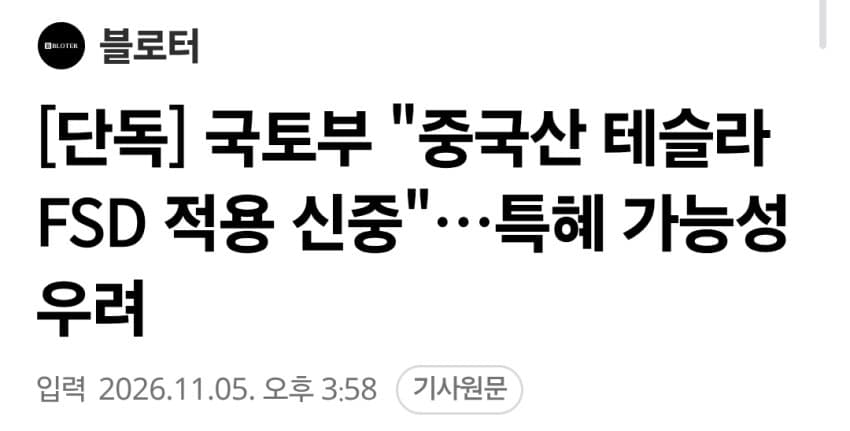
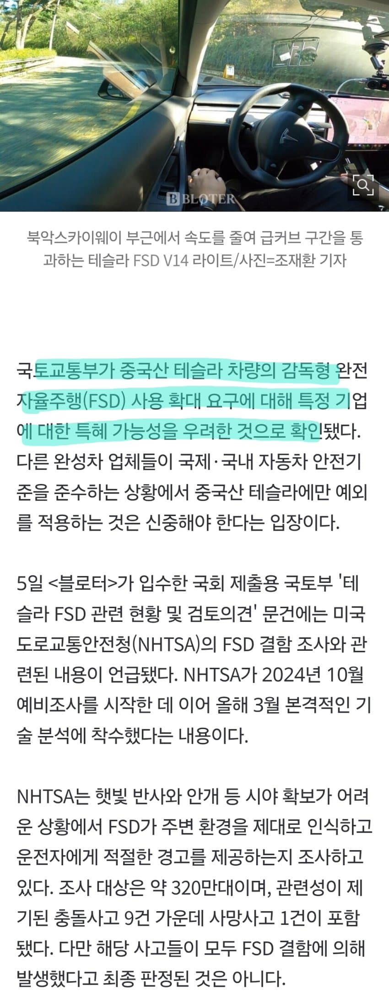
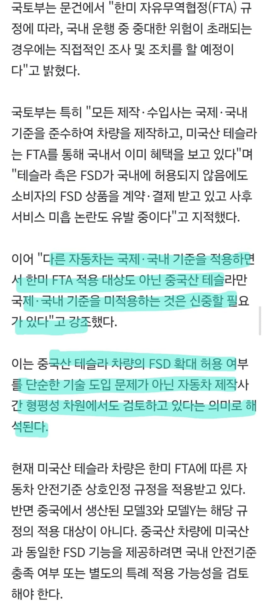
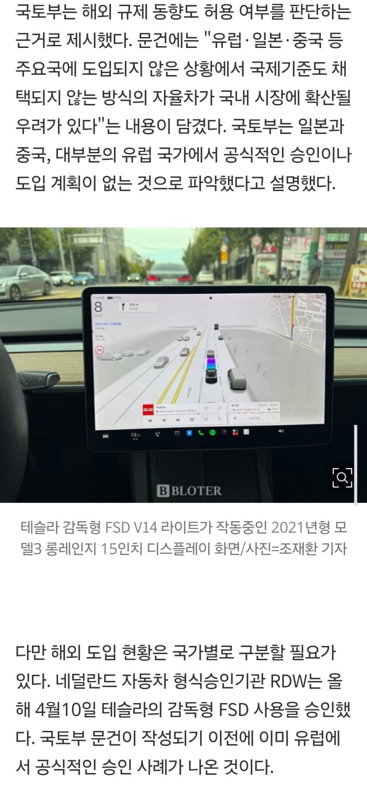
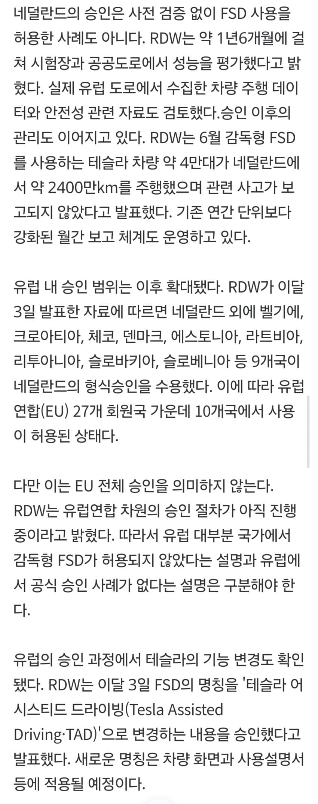
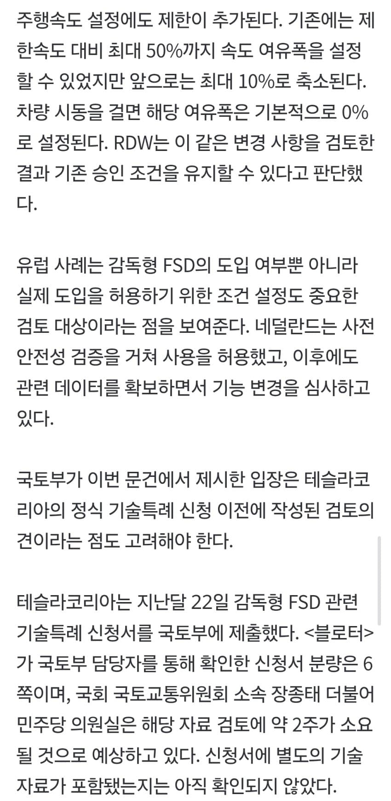
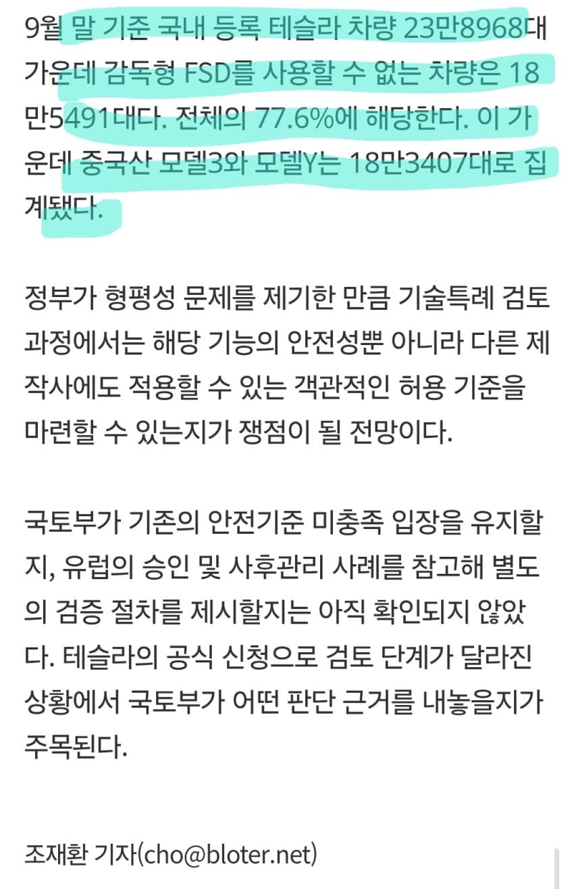

https://www.bloter.net/news/articleView.html?idxno=677868 [단독] 국토부 "중국산 테슬라 FSD 적용 신중"…특혜 가능성 우려국토교통부가 중국산 테슬라 차량의 감독형 완전자율주행(FSD) 사용 확대 요구에 대해 특정 기업에 대한 특혜 가능성을 우려한 것으로 확인됐다. 다른 완성차 업체들이 국제·국내 자동차 안전기준을 준수하는 상황에서 중국산 테슬라에만 예외를 적용하는 것은 신중해야 한다는 입장이다.5일 가www.bloter.net - dc official App출처: 코스피 갤러리 [원본 보기]